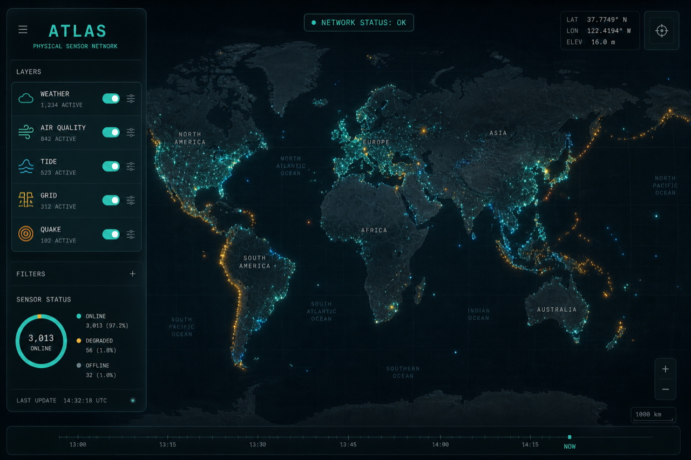
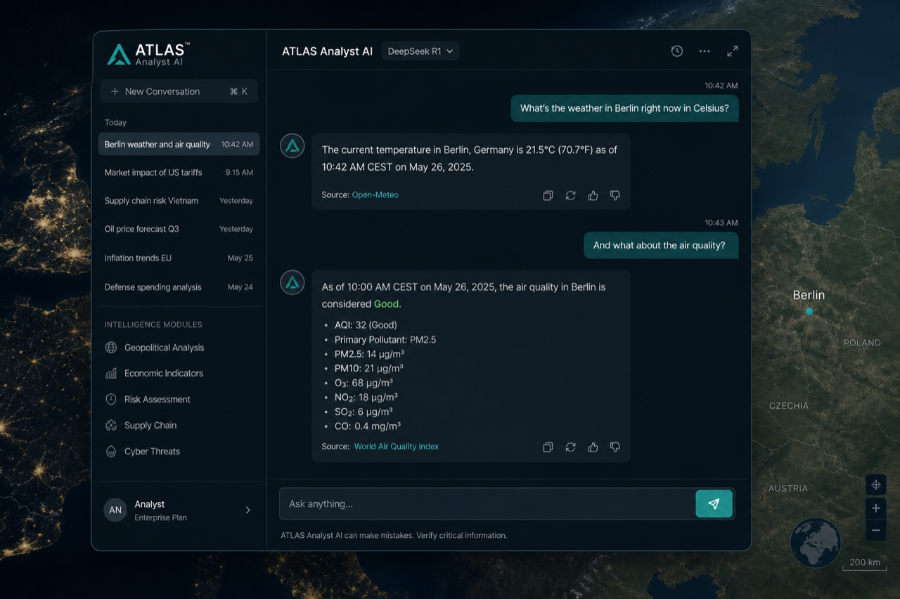
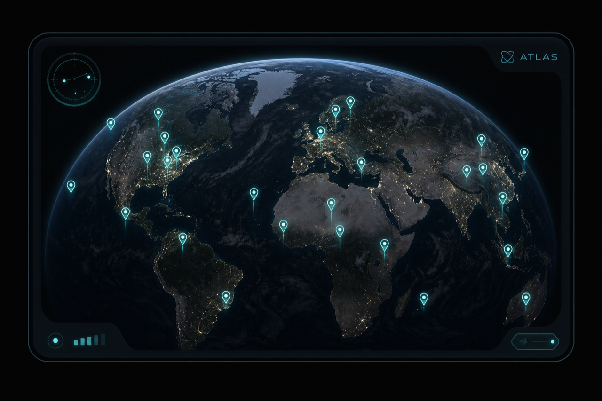

Physical sensor mesh · GAIA live relays
ATLAS.
A planetary map of live weather, air, tide, grid carbon and earthquakes — plotted from GAIA physical-oracle relays, with ATLAS Analyst grounded on the server-side snapshot.
Five layers. One orbit.
Cheap fleet pins keep the globe lit. Viewport reads refresh only what you can see. Click a station for a human-readable card.
Weather
Open-Meteo · NWS — temperature, wind, pressure.
Air
PM · CO₂ · senseBox relays.
Tide
NOAA CO-OPS gauge readings.
Grid
UK carbon intensity — regional.
Quake
USGS events with real lat/lon.
From orbit to panel
Full map, grounded analyst, Alien Monitor embed — same live mesh.



Load model that respects physics
Buyers never pass lat/lon into GAIA. ATLAS maps operator anchors, caches readings, and injects LIVE JSON into the analyst prompt server-side.
Fleet poll
Pins only — no stampede of per-device invokes.
Viewport TTL
Sensors in the visible bbox · ~45s shared cache · single-flight.
Grounded AI
DeepSeek by default. Numbers come from the server snapshot — clients cannot forge readings.
Alien Monitor
Node atlas · /embed mini-map · CTA to the full orbit view.